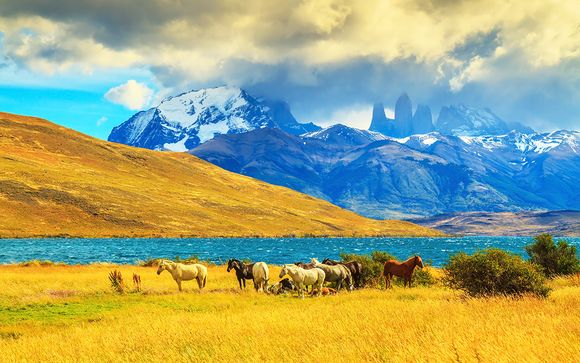

Mon voyage en Pantagonie
La Patagonie, littéralement « Terre des grands pieds », est cet immense territoire au sud du continent américain qui fut longtemps objet de discorde entre l’Argentine et le Chili. Aujourd’hui encore, il reste quelques zones floues dans le découpage des frontières… En raison des caractéristiques uniques de son écosystème, elle est d’un grand intérêt écologique, scientifique et touristique. Contempler la Patagonie chilienne n’est pas seulement un régal pour les yeux, c’est aussi respirer un air nouveau, écouter le vent et se sentir immergé dans un rêve, voyager à travers des paysages dans lesquels la marque de l’homme est encore minime. Les glaciers, montagnes, rivières, lacs, fjords, îles, mais aussi les forêts, steppes et zones humides qui la composent, font de cette région l’une des plus grandes réserves d’eau douce de la planète et un patrimoine naturel non seulement du Chili, mais aussi de toute l’humanité.